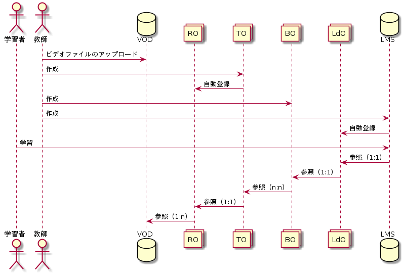

4. ZOOM連携機能¶
Zoomでクラウド録画した動画ファイルを，CHiBi-CHiLOのトピックとして自動登録し，LMSで利用する機能である．

4.2. ZOOM連携機能の流れ¶
本機能の流れは次の通り．

- Zoom動画をZoom APIを利用してWowzaサーバーに自動複製する．
- Zoom動画は，Zoomアカウント（メールアドレス）毎に分類されてVODに保管される．
- VODに登録されたビデオは，メールアドレスをキーにしてCHiBi-CHiLOユーザーごとにトピックとして自動登録される。
- 教師は自動登録されたトピックを選択しブックを作成し，LMSで提供する．
4.3. 想定している条件¶
- VODは、当面、Wowzaのみを想定しているが将来的にはVimeo等にも拡張できるよう配慮すること．
- Zoomライセンスはアカデミックライセンス，ビジネスライセンス等有料ライセンスを想定している．
- CHiBi-CHiLOにLTIで送信されたメールアドレスと，Wowzaに登録されたZoom動画のメールアドレスを突合し，CHiBi-CHiLOのトピックとして登録する．
4.4. CHiBi-CHiLOの改良¶
- CHiBi-CHiLOのユーザーテーブルにはメールアドレスをもうもうける．
- Zoom録画で作成したトピックはそれがわかるようにアイコン等つける．
- トピックを容易にMoodleに提供するため，CHiBi-CHiLOのブック作成手順を改良する．
- トピック一覧画面で，トピックを選択してブックを作成できるようにする．
制限事項（開発概要B）が行われない． * 上記①のが発生した場合，管理者が手作業にて，所定の場所にZoom動画を複製するなどすることとし，そのための管理機能は開発対象外とする． * Wowzaに登録されたビデオのアクセス制限は，Wowzaが提供するSecureTokenにより行うことする．そのため，CHiBi-CHiLOのトピックにWowzaのURLを直接記載すると，本人以外のビデオを参照できる．
4.5. 検討事項¶
4.5.1. ZoomのAPIによる動画の複製，削除¶
- Zoom APIによるクラウド録画へのアクセスは，管理者アカウントで可能か
- 管理者アカウントで行うことで，工数の節約ができるか
- 複製した後のZoomクラウドにのこされた動画ファイルを削除すべきか
- 削除しない場合は，同じ動画ファイルを重複して複製することをどう防ぐか
4.5.2. 自動登録のタイミング¶
Zoom動画動画のVODへの自動複製，VODからトピックの自動登録はどのようなタイミングでおこなうのか
- 何らかのイベントをハックする
- ユーザーがCHiBi-CHiLOにアクセスし，Zoomデータを取得する，等のアクションを行う
- バッチ等で定期的に行う
4.5.3. 複数のLMSからのCHiBi-CHiLOにアクセスした場合のユーザー突き合わせへの応用¶
- CHiBi-CHiLOのユーザーテーブルにメールアドレスを記録することで，メールアドレスでユーザーを付き合わせることで，複数のLMSからCHiBi-CHiLOのリソースにアクセスできるようになるのではないか．